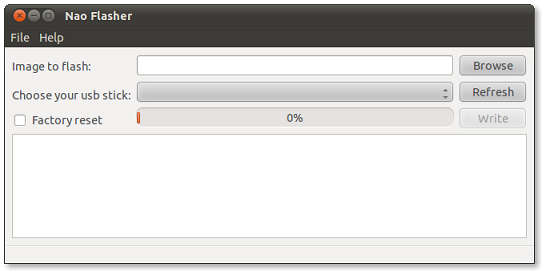
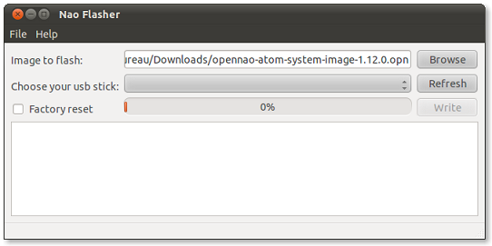
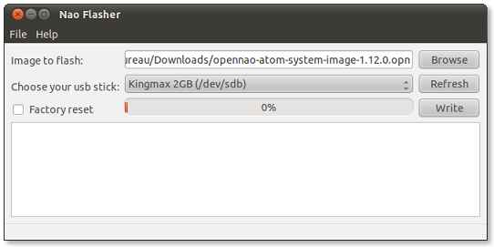
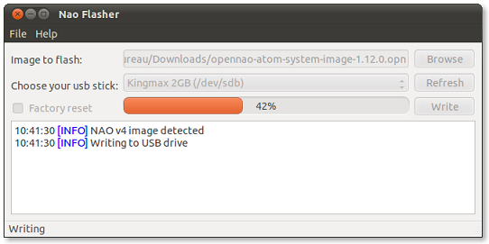
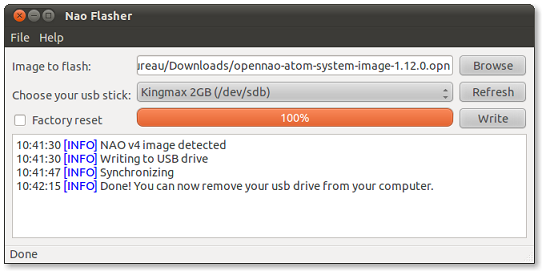

Make sure your NAO is a V4, if it is not the case, see NAOFlasher for NAO V3.x.
Be aware that the rescue procedure is not the standard way to update the software version of NAO.
To make sure it is what you need, read: Rescue mode.
| Step | Action |
|---|---|
Get a USB stick:
If you want to use an already formatted USB stick, you have to clean it. Warning This process erases the whole USB stick. Any data on the USB stick will be irreparably lost.
|
|
Get the NAO system image. You can download the latest release from the Aldebaran Community Website. Make sure to select the image that suits to your NAO:
|
|
Write the image on the USB stick. For further details, see Writing the image on the USB stick. |
|
Upgrade the NAO’s system and run the new software version For further details, see Upgrading the NAO’s system and running the new software version. |
| Step | Action |
|---|---|
Insert your USB stick in your computer. Note On Windows and Mac OS X, you might encounter a prompt telling you that the USB drive you inserted is not readable, and that you should format it. Please ignore this and click the Cancel button or similar. |
|
Launch the flasher executable. It should look roughly like this:  |
|
Click the Browse button (or press Ctrl+O) to select the image you want to flash in your local file system. You can also copy/paste the file’s address directly in the text box.  |
|
Select your USB stick from the list. If your USB stick doesn’t appear in the list, try the Refresh button after inserting it in your computer).  |
|
Check the Factory Reset box in order to install a brand new system in a Rescue mode. If not checked, NAO Flasher will do a simple update, like the command available in Choregraphe. For further details about why you should or should not choose a Factory reset, read Rescue mode. Warning Factory Reset will remove all the data from your robot, please backup your data before running the program. |
|
Click the Write button to start the process:  |
|
If you get an error message telling:
|
|
When the process is completed, it should look like this:  |
| Step | Action |
|---|---|
| Make sure that the robot is plugged to its charger all along the system update process. | |
| Shutdown the robot. | |
| Plug the USB stick you previously flashed into the USB connector at the back of NAO’s head. | |
To perform and monitor the upgrade, see: Launching the upgrade. NAO’s system will be upgraded during the boot. The new software version will be automatically started. If you enabled the Factory reset option, this may take a very long time to complete. |